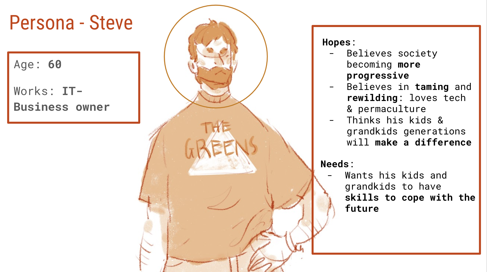

Fashion Activist Toolkit & AR
Collaborative Project. UXR/UXD/DEV
- The Problem
- The Process
- The Outcome
- Reflection
The Problem:
Through the subject Fashion Sustainability at QUT we were given the brief “collaboratively develop a project designed to raise awareness of a key sustainability issue in order to support more sustainable practices of production and consumption within the fashion system.”
I had the opportunity to collaborate with Fashion Design students Ula Francis and Millie O’Hara who both shared my enthusiasm for slow fashion practices. We were keen to examine how we could change consumption practices and extend the use phase of an item within the fashion system.
Through interviews and field research we discovered there’s a growing interest in mending and visible mending however many people lack the skills or design vision to attempt a mending project. We decided to attempt to address this skill and vision deficit.
The Process:
I was able to facilitate some of our group work using technology and skills I’ve developed whilst studying Interaction Design. We collated all our findings and class work using Miro. We also used Miro to be able to collaborate and brainstorm remotely during group work sessions. This enabled us to all share ideas at the same time to be able to avoid groupthink. It also allowed for a democratic design process as we could quickly vote on concepts.
We followed the IDEO Design Thinking process from Empathise through to Prototype. Our process in the empathise stage was very research heavy, much to my delight. After some initial brainstorming around what type of issues we might like to tackle we developed a research plan. Our plan consisted of a mix of literature reviews, field studies and interviews.
Our field studies involved visiting local businesses and locations that we felt people with progressive environmental and fashion views might visit. Through a mix of photographs, annotation, observation and sketching we were able to document what sort of age demographics were visiting these locations and how they interacted with the space whilst there. We also made observations around attire and aesthetics to see if we could determine any attitudes towards fashion and sustainability.

From these observations we developed a problem statement: How might we enable activists to access slow fashion skills to extend the life of their clothes?
We used our research to help us develop a stakeholder map, proto-personas and to create a systems map of protest/slogan shirts. The systems map particularly helped us in identifying potential for extending garment life that might be of interest to people with pro environmental attitudes.
After much ideation we settled on an interactive zine combined with augmented reality. Our goal was to have a zine that detailed the how to and why aspects of visible mending whilst the augmented reality worked as a tool to help people visualise possible mends they could make to their clothes.
We initially discussed using Adobe Publisher to prototype our zine however we felt limited by the lack of collaboration this afforded. I was able to introduce my team to Figma so that we could collaborate in real time and make design decisions together. Although typically used for UI it worked exceptionally well for designing print media and had a very low barrier to entry in terms of learning the tools.
I also used SparkAR to create an augmented reality prototype experience of interacting with visible mending. We digitised an existing iron on patch using Blender to create a 3D object that could be digitally positioned using SparkAR.
The Outcome:
The Fashion Activist Toolkit; a multimedia approach to disseminate the skills required to mend and customise clothing. The toolkit would be presented as a physical zine (which can also be accessed digitally through WePresent and would be promoted as a digital download on social media ) to a pro-environmental activist audience as another form of activism that actively disrupts existing fashion consumption practices.
The zine borrows on traditional zine practices with a strong DIY aesthetic and would cover topics including:
- How slow fashion disrupts current fashion consumption models.
- Techniques for mending existing garments.
- Techniques for customising clothing (with a particular focus on customisation to convey pro environmental messaging).
- Encouragement and steps to host mending workshops.
- Empowerment to share the skills and knowledge of mending between people who know these skills and those that don’t.
- How the ways in which we dress can be a form of quiet activism.
Where it deviates from traditional zines however, is that throughout the zine there will be embedded opportunities to extend the content using augmented reality.
The augmented reality experience would aid in the teaching of mending and customization skills and would also enable our target audience to visualise their makes and customisations before committing to them. We hope that the augmented reality experience might also further encourage acts of fashion and digital activism.
You can download our presentation slides here.
You can download our full report here
Reflection:
The intersection of fashion and technology is definitely my passion as a fashion futurist. Having the opportunity to work in the role of a technologist and UX researcher collaborating with fashion designers has shown me how creative and beneficial this collaboration can be.
I've learnt the importance of sharing knowledge around tools and not assuming that everyone in every stream of design is aware of all the same tools. Also of being open to new ways of doing things and that we can learn so much from other design fields.
I feel there is a lot of potential for technology to disrupt existing fashion systems and to hopefully reshape them into a more sustainable and ethical system. Fashion has always been forward focused in its vision however production and consumption are still heavily favouring a take, make, waste model.
User Research has also always featured heavily in the form of trend forecasting, such as the work carried out by WGSN. I feel that by extending research practices beyond trend forecasting and perhaps taking an exploratory/generative UX research approach we may be able to create and discover many innovative solutions to some of the industries most complex problems.